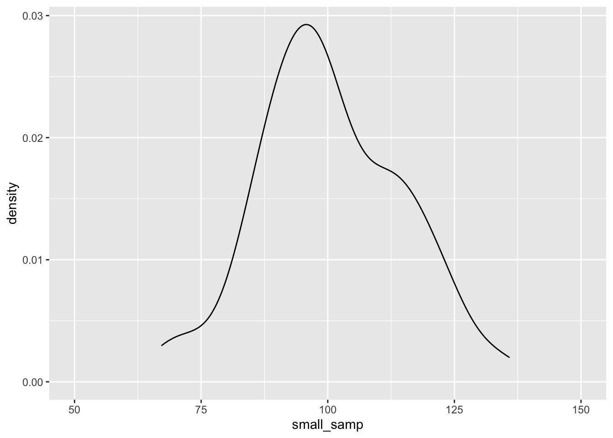
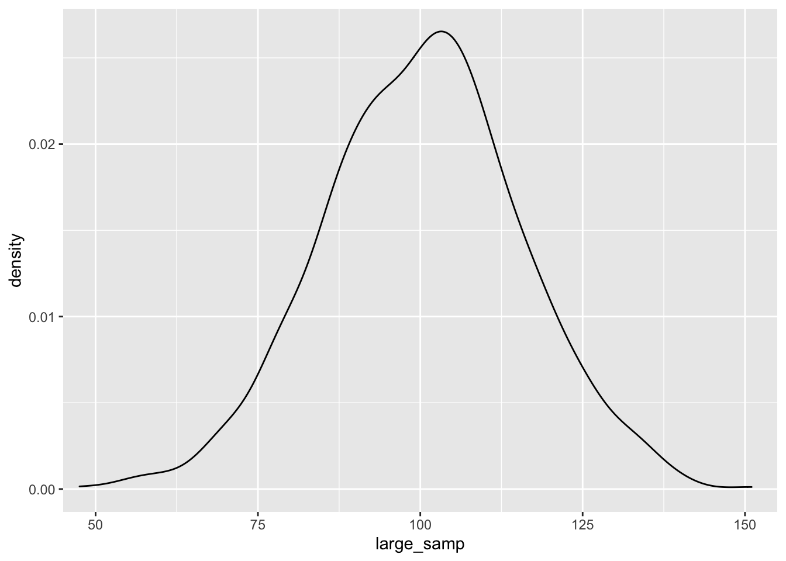
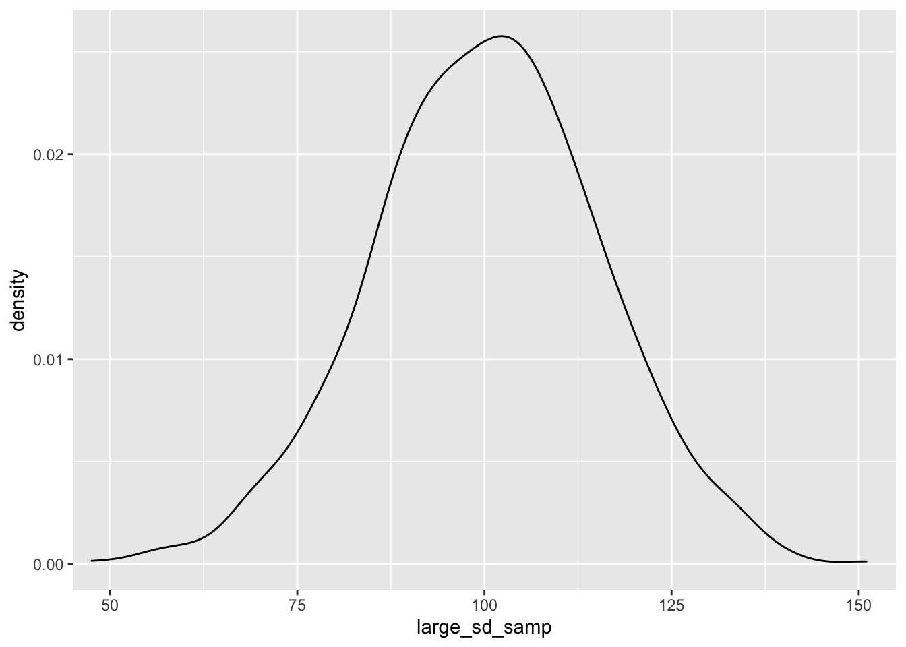
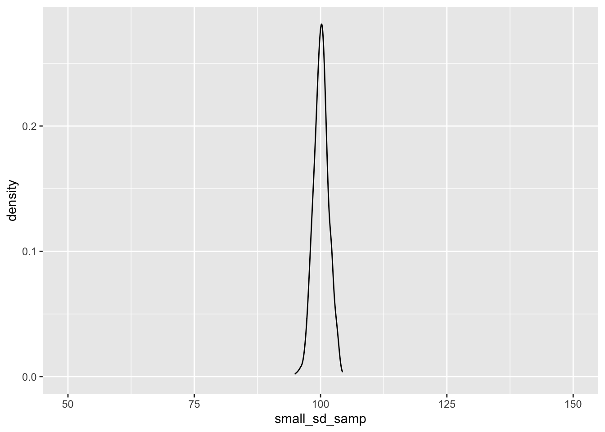
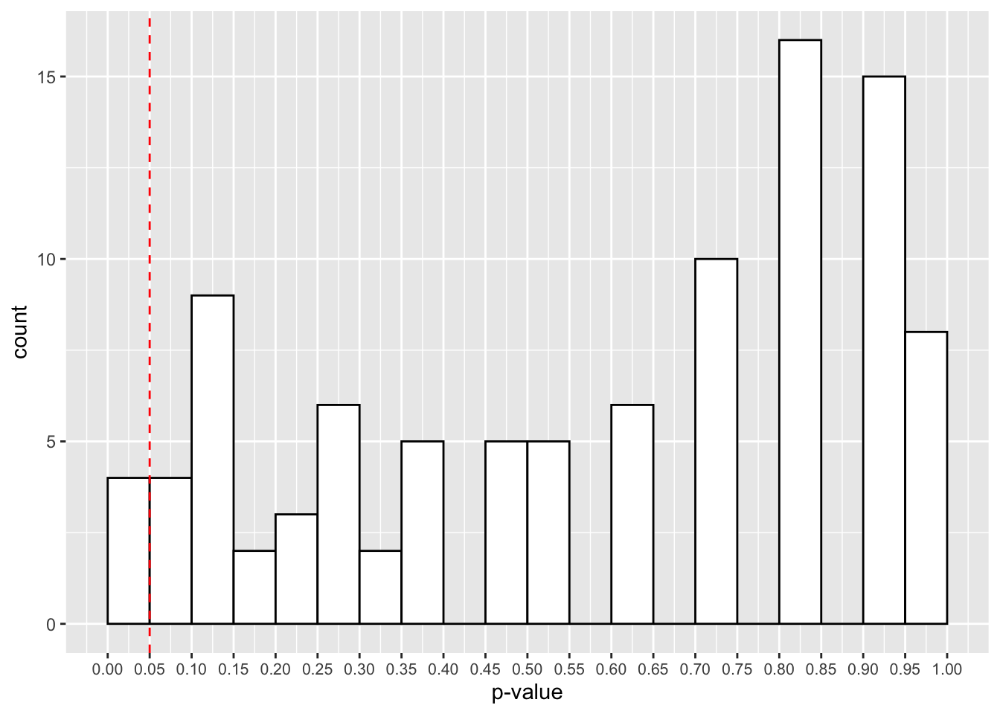
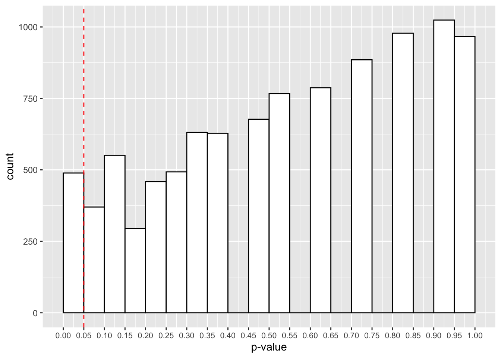
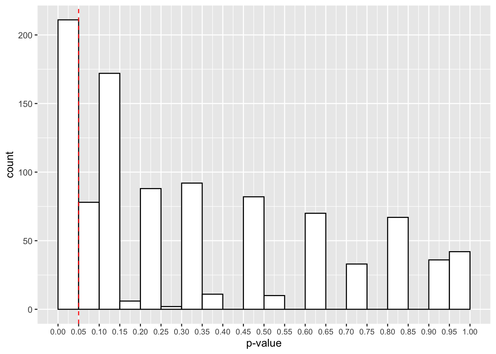
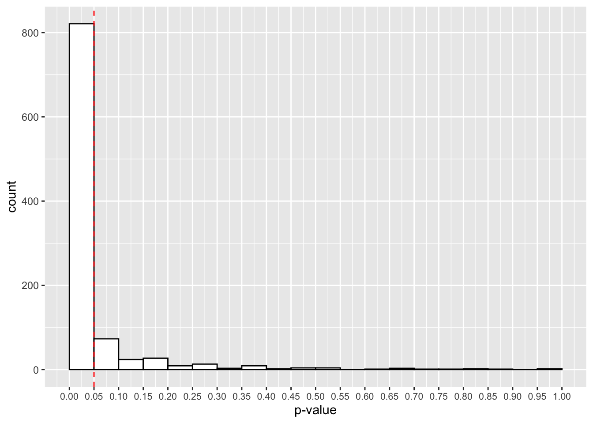

Chapter 8 Simulation and Calculating Power
In this session we’ll cover how to simualte data to improve our statistical inferences. We’ll use simulation to perform power analyses, and to understand more about how p-values work. Finally, we’ll look at how you can calculate power easily and quickly in several pre-existing packages and functions in R.
Specifically, we’ll cover:
- simulating data in R
- simulation-based power analyses
- packages for power analysis
8.1 Getting Started
As always, we first need to load the tidyverse set of package to perform the data manipulation for this chapter.
# load packages
library(tidyverse)8.2 Simulating Data
First off, we’ll explore different ways to simulate data using some of the basic functions in R. We’ll look at randomly sampling data that adheres to the following distributions:
- Uniform, using
runif()(read: random uniform) - Normal, using
rnorm()(read: random normal ) - Binomial, using
rbinom()(read: random binomial)
Additionally, we’ll look at randomly sampling data with and without replacement, and how we can determine bias in our sampling procedure by defining the probability with which items should be sampled.
We’ll look at sampling data following these distributions as this provides us with a better understanding of our data, and equips us with the means to evaluate our research plans prior to the expensive (in terms of time and money) procedure of testing. Put simply, simulating data is useful because it allows us to do things like calculate power for simple and complex experimental designs, and to observe when participants are performing to change in tasks.
8.2.1 The Uniform Distribution
With the uniform distribution, we sample numbers such that all values are equally likely to be drawn from our range. Try this out a few times:
runif(n = 5, min = 1, max = 10)## [1] 3.300586 2.342055 4.873663 9.191708 5.319560In all likelihood, you should get different numbers to those above, but your numbers will all be between 1 and 10 (excluding these two values). You can increase the amount of numbers sampled by changing n to anything else. For example, try this:
runif(n = 10, min = 1, max = 10)## [1] 8.011183 5.748096 1.380451 7.302121 5.467758 6.987622 2.161111 5.345088
## [9] 5.670862 4.214587Now we have 10 numbers between 1 and 10.
Finally, we can change the minimum and maximum values, or the range of values we want to sample from. Let’s sample 10 numbers from between 0 and 1.
runif(n = 10, min = 0, max = 1)## [1] 0.90863606 0.60394266 0.78368223 0.47517589 0.03186038 0.51023136
## [7] 0.51073424 0.58464829 0.76034355 0.08140943What happens if we calculate the mean from 10 samples from a uniform distribution? What about 100, 1000, or even 10000?
runif(n = 10, min = 0, max = 1) %>% mean()## [1] 0.4962173runif(n = 100, min = 0, max = 1) %>% mean()## [1] 0.4754119runif(n = 1000, min = 0, max = 1) %>% mean()## [1] 0.4878579runif(n = 10000, min = 0, max = 1) %>% mean()## [1] 0.5000408As you can see, as we draw more samples, the mean of these samples better represents the true distribution of our sampling procedure. Think about how this could impact your studies. With small sample sizes, we’re likely to get skewed data that tends towards the extremes.
8.2.2 The Normal Distribution
Alternatively, we can sample continuous data from the normal distribution. We might use this to generate data on a continuous scale with a normal distribution in the population, such as the height and weight of a participant, or even their IQ.
To do this, we use the rnorm() function. You may have noticed me doing this when creating data for the previous sessions, and that’s with good reason; we often fit our data with models that assume a normal distribution of our variables, and so creating data with this assumed distribution often meets the assumptions of the tests we’d like to run.
This sampling function provides us with a good range of values if we know (or can guess at) the mean and standard deviation of a sample from a population. Let’s see how this works. Below, we’ll sample some data from a population where we know the mean and standard deviation; the IQ test. Here, the mean is 100 and the standard deviation is 15. Let’s go ahead and sample 10 people from this population.
rnorm(n = 10, mean = 100, sd = 15)## [1] 82.16277 99.75992 128.28859 76.65559 73.06495 97.49910 96.44725
## [8] 102.10636 91.52518 125.11196OK, we have a good range of values for our IQ test here, but as before, with a small sample size our distribution will be skewed. Let’s observe how this plays out with a density plot. (Here, I’m being lazy and not defining mapping = aes(), as ggplot understands that what we put in aes() will be mapped to the data/plot.)
set.seed(5)
small_samp <- rnorm(n = 100, mean = 100, sd = 15)
large_samp <- rnorm(n = 1000, mean = 100, sd = 15)
ggplot() + geom_density(aes(small_samp)) + coord_cartesian(x = c(50, 150))
ggplot() + geom_density(aes(large_samp)) + coord_cartesian(x = c(50, 150))
As before, the data seem to fit the population distribution better when we have larger sample sizes. Let’s change the standard deviation to see how variance in our samples influences the distribution of effects. Here, we’ll just focus on the larger sample size:
set.seed(5)
large_sd_samp <- rnorm(n = 1000, mean = 100, sd = 15)
small_sd_samp <- rnorm(n = 1000, mean = 100, sd = 1.5)
ggplot() + geom_density(aes(large_sd_samp)) + coord_cartesian(x = c(50, 150))
ggplot() + geom_density(aes(small_sd_samp)) + coord_cartesian(x = c(50, 150))
As you can see, as we sample from a population with a smaller standard deviation, our samples will be closer to the mean score. This has important implications for our statistical tests; the larger the standard deviation within our samples, the more samples we’ll need to detect an effect.
8.2.3 The Binomial Distribution
Next, we’ll look at sampling from a binomial distribution. We might use this to generate data on a binomial scale, such as the probability of a success/failure in a task (e.g. did they get the question right or not?). We sample from a binomial distribution using the rbinom() function.
This function takes 3 arguments: n, the number of observations we’d like to see; size, the number of trials within an observation; and prob the probability of a success (1) (vs. failure, 0) on each trial.
Below, we’ll get 10 observations, of 1 trial each, with a success rate of 50% on each trial.
set.seed(1000)
rbinom(n = 10, size = 1, prob = 0.5)## [1] 0 1 0 1 1 0 1 1 0 0As you can see, our sampling produced 5 successes (1) and 5 failures (0). What if we want to make each observation the number of successes in 20 trials. Let’s change the size argument to 20.
set.seed(1000)
rbinom(n = 10, size = 20, prob = 0.5)## [1] 9 12 7 11 10 7 11 10 8 9Now each trial roughly follows a 50% success rate as before, but each observation is out of 20 trials. We can convert these to proportions by simply dividing the whole thing by the same value as our size argument.
set.seed(1000)
rbinom(n = 10, size = 20, prob = 0.5) / 20## [1] 0.45 0.60 0.35 0.55 0.50 0.35 0.55 0.50 0.40 0.45Did you notice the repetition of 20 in our code? We’ll save some repetition for the value of 20 by defining the number of trials in a separate object, and passing the name of this object to our argument. This should get you used to using objects as holders for values as a precursor to writing your own functions!
# define number of trials
n_trials <- 20
set.seed(1000)
rbinom(n = 10, size = n_trials, prob = 0.5) / n_trials## [1] 0.45 0.60 0.35 0.55 0.50 0.35 0.55 0.50 0.40 0.45Also, I think our code is a bit more readable now that we know what the 20 represents!
Can you guess what the mean of a 1000 samples might look like? What about the distribution of these? Try calculating the mean of 1000 samples of 20 trials with a probability of 0.5 and plot this out using a histrogram.
8.2.4 Flexible Sampling
Finally, we can also randomly sample discrete variables with pre-defined probabilities. Nicely, we can use the same function to do this for strings of character or for integers. To do this, we use the sample() function. This is useful for creating dummy data sets where we might want to randomly sample names for participants, or outcomes with a bias on our draws.
We can simply define what to sample from with the x argument. If this is an integer, R will sample from any positive integer up to and including this limit. As before we can ask for any number of samples with the size argument.
Finally, we can specify if we want to replace these numbers with the replace argument. If we set this to true, R puts any drawn numbers back in the bag before picking them out again. If we set this to FALSE, R will not put the numbers back in the bag before drawing again, so we can’t redraw the same number.
set.seed(1000)
sample(x = 10, size = 10, replace = TRUE)## [1] 4 6 3 8 3 2 6 6 6 1Did you notice how we got 3 twice? Let’s change the replace argument to FALSE to see what happens.
set.seed(1000)
sample(x = 10, size = 10, replace = FALSE)## [1] 4 6 3 5 8 7 2 10 9 1Now we only get unique numbers. If we ask to draw more numbers than we have unique values, this will fail.
set.seed(1000)
sample(x = 10, size = 11, replace = FALSE)We can also sample from characters, such as when we might want to create some data for the names of participants.
set.seed(1000)
names <- c("Glenn", "Nik", "Vera", "Neil")
sample(x = names, size = 2, replace = TRUE)## [1] "Neil" "Neil"We can also set some pre-defined probabilities for the things we’ll sample from. Let’s say the probability of selecting “Glenn” is most likely in 10 draws.
set.seed(1000)
names <- c("Glenn", "Nik", "Vera", "Neil")
sample(x = names, size = 10, replace = TRUE, prob = c(0.7, 0.1, 0.1, 0.1))## [1] "Glenn" "Vera" "Glenn" "Glenn" "Glenn" "Glenn" "Vera" "Glenn" "Glenn"
## [10] "Glenn"As you can see, Glenn gets drawn most often because this has the highest probability to be drawn (i.e. the first thing in x is related to the first probability in prob).
This sampling procedure is very flexible for simulating data if we have some idea about the probabilities for things to be sampled. Let’s look at an example where sampling like this is useful.
8.3 Sampling for Inference
Imagine we’re studying a person who claims to be a psychic. We decide to test their claim by getting them to take part in an experiment. In this experiment, we have 10 cards each with 1 of 5 symbols on the back. The psychic says that they can guess, above chance, which symbol is on the back of the card.
Let’s simulate their data for 10 attempts.
# sample the true values of the cards
set.seed(13)
psychic_outcome <- rbinom(n = 1, size = 10, prob = 0.2)
# see the true values
psychic_outcome## [1] 3The psychic guessed 3 cards correctly out of 10. However, we know that on each trial, the probability of a success is only 20% (i.e. 1 in 5). Was the psychic telling the truth, or should we have reason to doubt their claim?
binom.test(x = psychic_outcome, n = 10, p = 0.2)##
## Exact binomial test
##
## data: psychic_outcome and 10
## number of successes = 3, number of trials = 10, p-value = 0.4296
## alternative hypothesis: true probability of success is not equal to 0.2
## 95 percent confidence interval:
## 0.06673951 0.65245285
## sample estimates:
## probability of success
## 0.3So, it seems that although they performed above chance, the sample size is too small to consider this difference between the observed and expected probability of success to be meaningful.
What if we change it so the psychic got it right 30 times in 100 chances? We’ll simply multiply the number of successes and observations by 10 and test for a significant difference between the observed and expected probability.
binom.test(x = psychic_outcome * 10, n = 10 * 10, p = 0.2)##
## Exact binomial test
##
## data: psychic_outcome * 10 and 10 * 10
## number of successes = 30, number of trials = 100, p-value = 0.01695
## alternative hypothesis: true probability of success is not equal to 0.2
## 95 percent confidence interval:
## 0.2124064 0.3998147
## sample estimates:
## probability of success
## 0.3Now we have a significant effect showing indicating that we should reject the null hypothesis. But do any of you really believe that the psychic is truly psychic? Remember that we used the binomial sampling procedure to come up with these scores in the first place, so we know that the true probability of a success on each trial is 0.2, or 20%, which is chance.
Let’s change our sampling procedure into a function so we can better explore whether or not we should trust the outcome of this one study. Before we do so, we’ll see how functions work, and why they are useful in our work.
8.3.1 Understanding p-values and Type-I Errors
User defined functions in R take the form of:
function_name <- function(parameters_to_vary) {
things_for_the_function_to_do
}We first have to specify a name for our function. Often, it’s best to use verb-like naming here, as your functions are things you want to do to something (e.g. calculate descriptive statitics etc.). You then assign to this name how the function works. Within the function call in parentheses, you can define different parameters of your function that you’d like to vary. This simply makes your function flexible to doing things to data with different inputs. Finally, within the body of the function, {here is the body}, we define things to do to your parameters that are passed to the function. The last thing that you type in your function is what your function returns to you when you run it (i.e. what you will see when you run the function).
Let’s transform our sampling and testing procedure into a function. I’ve commented this code so you understand how it works.
# define function name and parameters to vary
simulate_psychic_test <- function(n_trials, prob_success) {
# sample binomial data (successs or not) for varying trials and probabilities
psychic_outcome <- rbinom(n = 1, size = n_trials, prob = prob_success)
# run a binomial test on the sampled data against your proability
test <- binom.test(x = psychic_outcome, n = n_trials, p = prob_success)
# retrieve the p-value, this is what is returned in our function
test$p.value
}Congratulations, you’ve just made your first user-defined function in R! Here, we’ve defined a function that will take a number of trials and a probability of success on each trial. It will then sample some data under those parameters, before testing it against the probability of success. Finally, it will extract the p-value from that test and return it to you. Let’s see this in action.
Run and rerun the code below several times to see what happens. What do the p-values look like? Remember, a value below 0.05 is typical in psychology for the cut-off point where we’ll reject the null hypothesis of no difference between the observed and predicted probabilities of success.
simulate_psychic_test(n_trials = 100, prob_success = 0.2)## [1] 0.5322562Ok, so you’ve seen how these p-values shift even when we know there’s no true effect. Let’s simulate the experiment 100 times to see what happens to the distribution of the p-values.
Nicely, R has a replicate() function, which replicates whatever we ask it to do by a pre-defined number. This replicate function takes n as an argument, which is the number of replication to carry out, plus whatever you want to replicate.
Can you predict what will happen?
simulations <- replicate(n = 100,
simulate_psychic_test(n_trials = 100,
prob_success = 0.2
)
)ggplot() +
geom_histogram(mapping = aes(simulations),
binwidth = 0.05,
boundary = 0,
fill = "white",
colour = "black") +
scale_x_continuous(limits = c(0, 1),
breaks = seq(from = 0, to = 1, by = 0.05)
) +
geom_vline(xintercept = 0.05, linetype = 2, colour = "red") +
labs(x = "p-value") +
theme(axis.text.x = element_text(size=8))
The red cut-off line shows the number of values that fall below our 0.05 cut-off point for our p-values. That looks like roughly 3 in 100 samples, or 3% of our simulated studies.
Try increasing the number of replications for the experiment to see how the p-values change. How does it look with 10,000 simulated studies?
simulations <- replicate(n = 10000,
simulate_psychic_test(n_trials = 100,
prob_success = 0.2
)
)ggplot() +
geom_histogram(aes(simulations),
binwidth = 0.05,
boundary = 0,
fill = "white",
colour = "black") +
scale_x_continuous(limits = c(0, 1),
breaks = seq(from = 0, to = 1, by = 0.05)
) +
geom_vline(xintercept = 0.05, linetype = 2, colour = "red") +
labs(x = "p-value") +
theme(axis.text.x = element_text(size=8))
Here we have roughly 500 studies showing p-values below 0.05. Thats 5% of the 10,000 studies. Is that surprising? Even when there’s no effect in the population, with repeated sampling we’re bound to find some cases where we have p-values below 0.05. That’s why replications are so important for our research!
This false-positive rate is the type-I error rate of our study, and is determined by our p-value. This determines the amount of time we will incorrectly reject the null hypothesis in the long run (i.e. if we run several studies over time).
8.3.2 Understanding Power and Type-II Errors
What if we change our function so that we can give the psychic a different probability to the true probability of a success?
# define function name and parameters to vary
simulate_psychic_test <- function(n_trials, prob_success, psychic_success) {
# sample binomial data (successs or not) for varying trials and probabilities
psychic_outcome <- rbinom(n = 1, size = n_trials, prob = psychic_success)
# run a binomial test on the sampled data against your proability
test <- binom.test(x = psychic_outcome, n = n_trials, p = prob_success)
# retrieve the p-value, this is what is returned in our function
test$p.value
}true_effect_simulations <- replicate(n = 1000,
simulate_psychic_test(n_trials = 100,
prob_success = 0.2,
psychic_success = 0.25
)
)ggplot() +
geom_histogram(aes(true_effect_simulations),
binwidth = 0.05,
boundary = 0,
fill = "white",
colour = "black") +
scale_x_continuous(limits = c(0, 1),
breaks = seq(from = 0, to = 1, by = 0.05)
) +
geom_vline(xintercept = 0.05, linetype = 2, colour = "red") +
labs(x = "p-value") +
theme(axis.text.x = element_text(size=8))
Now it looks like we have a much larger proportion of studies that give us p-values below 0.05. Actually, it’s 211, or 21.1%.
What does this tell us? Actually, this is the power of our study, or the probability for us to detect a true effect when it is present in the population. As such, 1-power is the type-II error rate, or the probability to reject the alternative hypothesis when a true effect is present in the population.
At only 21.1%, this is inadequate for our purposes. We generally aim for at least 80% in psychological research. Here we have a much larger chance of committing a type-II error, or incorrectly rejecting the alternative hypothesis when there is a true effect in the population.
We can use this simulating method to help determine the parameters of our study. Let’s look into increasing the sample size in our study, or the number of observations we make during the experiment.
true_effect_simulations <- replicate(n = 1000,
simulate_psychic_test(n_trials = 600,
prob_success = 0.2,
psychic_success = 0.25
)
)ggplot() +
geom_histogram(aes(true_effect_simulations),
binwidth = 0.05,
boundary = 0,
fill = "white",
colour = "black") +
scale_x_continuous(limits = c(0, 1),
breaks = seq(from = 0, to = 1, by = 0.05)
) +
geom_vline(xintercept = 0.05, linetype = 2, colour = "red") +
labs(x = "p-value") +
theme(axis.text.x = element_text(size=8))
That looks better! Now, in most experiments, we’ll get a p-value below 0.05. How many studies detected this true effect? Our power for this study is:
mean(true_effect_simulations < 0.05)## [1] 0.821Great, at 600 trials we now have an 82.1% chance to detect a true effect if present. It looks like we’ll have one tired psychic by the end of this experiment!
As long as you can construct data that fits the form of your planned experiment you can use simulation to calculate the predicted power under the parameters that you set. As long as we have t- or p-values to capture, we can simulate data, fit our model, and count the number of p-values below our threshold (or t-values above our threshold) where we reject the null hypothesis in order to come up with the power of our study. Typically, around 1000 samples is enough for this.
8.3.3 Flexible Power Analyses with Simulation
8.3.3.1 Simulation for Simple Designs
Now we understand how we can use simulation to create data sets and observe the probability that we’ll detect a true effect with a simple design, we can build on our knowledge to look at more complex designs.
Let’s return to the IQ study data. Remember, that the IQ test has a mean of 100 and standard deviation of 15. Let’s run a power analysis to detect whether a predicted sample of people differ from this average range.
calculate_IQ_power <- function(n, sample_mean, sample_sd, pop_mean, pop_sd) {
sample_data <- rnorm(n = n, mean = sample_mean, sd = sample_sd)
test <- t.test(sample_data, mu = pop_mean, sd = pop_sd)
test$p.value
}Now let’s run our function, replicated 1000 times. We’ll sample assuming our population and sample have the same standard deviation, but the sample mean is 5 points higher than the general population. Finally, we’ll sample 60 people.
We’ll then calculate the mean number of p-values below our 0.05 cut off point to see our power.
p_vals <- replicate(1000, calculate_IQ_power(60, 105, 15, 100, 15))
mean(p_vals < 0.05)## [1] 0.735Great, 73.5% power is not bad at all. Maybe we should bump up the sample size a little to get to 80%.
p_vals <- replicate(1000, calculate_IQ_power(75, 105, 15, 100, 15))
mean(p_vals < 0.05)## [1] 0.835It looks like around 75 participants does a good job for us. What if the standard deviation for our sample was smaller? i.e. what if the samples tend to be more similar in their mean scores?
p_vals <- replicate(1000, calculate_IQ_power(20, 105, 7.5, 100, 15))
mean(p_vals < 0.05)## [1] 0.82Now it looks like we only need around 20 participants to achieve the same power.
What if the mean score is half as large as before?
p_vals <- replicate(1000, calculate_IQ_power(70, 102.5, 7.5, 100, 15))
mean(p_vals < 0.05)## [1] 0.793Now we need more participants, even though the standard deviation is as small as before.
As you can see, sample size, effect sizes, and variance all affect the ability to detect a true effect.
8.3.3.2 Simulation for More Complex Designs
So far, we’ve looked at simulation for cases where we have a baseline condition to compare against. However, we often want to compare to or more groups against one another to determine if they differ on some outcome variable. For a t-test, this is as simple as sampling two sets of data using rnorm() and comparing the two against one another. However, we’ll look at a more complex 2 by 2 between-subjects design, which can be adapted to most scenarios.
Here, participants take part in 1 combination of 2 factors (A and B) each with 2 levels. To get started we first have to create a tibble to hold our simulated data.
# how many subjects?
n <- 60
# create your design
design <- expand.grid(A = c(-.5, .5), B = c(-.5, .5))
# create table of data
data <- tibble(subject = 1: n,
A = rep(design$A, n/4),
B = rep(design$B, n/4)
)
# look at the data
data## # A tibble: 60 × 3
## subject A B
## <int> <dbl> <dbl>
## 1 1 -0.5 -0.5
## 2 2 0.5 -0.5
## 3 3 -0.5 0.5
## 4 4 0.5 0.5
## 5 5 -0.5 -0.5
## 6 6 0.5 -0.5
## 7 7 -0.5 0.5
## 8 8 0.5 0.5
## 9 9 -0.5 -0.5
## 10 10 0.5 -0.5
## # … with 50 more rowsNotice that we defined our two condition columns with the values of -.5 and .5. Think back to how this is modelled in a linear model in R. What might the intercept term be? It will be the mean across both conditions.
Next, we need to set up the coefficients and error term for our model. We want the intercept to be 400, a shift in A to be the intercept + 30, a shift in B to be the intercept - 50, and the interaction term to be the intercept - 40. Finally, our error term has a mean of 0 and standard deviation of 40.
We then create our data using the formula for the linear model, and add this to our data.
# set up coefficients
alpha = 400
beta1 = 30
beta2 = -50
beta3 = -40
err <- rnorm(n, 0, sd = 40)
# create data from the linear model
data$y <- alpha + (beta1*data$A) + (beta2*data$B) + (beta3*data$A*data$B) + err
# see the data
data## # A tibble: 60 × 4
## subject A B y
## <int> <dbl> <dbl> <dbl>
## 1 1 -0.5 -0.5 421.
## 2 2 0.5 -0.5 472.
## 3 3 -0.5 0.5 408.
## 4 4 0.5 0.5 443.
## 5 5 -0.5 -0.5 423.
## 6 6 0.5 -0.5 479.
## 7 7 -0.5 0.5 405.
## 8 8 0.5 0.5 386.
## 9 9 -0.5 -0.5 498.
## 10 10 0.5 -0.5 428.
## # … with 50 more rowsLet’s see how this data would look when modelled.
fit <- lm(y ~ A * B, data = data)
summary(fit)##
## Call:
## lm(formula = y ~ A * B, data = data)
##
## Residuals:
## Min 1Q Median 3Q Max
## -108.540 -30.991 8.045 24.951 89.673
##
## Coefficients:
## Estimate Std. Error t value Pr(>|t|)
## (Intercept) 401.193 5.694 70.456 < 2e-16 ***
## A 17.397 11.388 1.528 0.1322
## B -55.695 11.388 -4.890 8.85e-06 ***
## A:B -47.358 22.777 -2.079 0.0422 *
## ---
## Signif. codes: 0 '***' 0.001 '**' 0.01 '*' 0.05 '.' 0.1 ' ' 1
##
## Residual standard error: 44.11 on 56 degrees of freedom
## Multiple R-squared: 0.3532, Adjusted R-squared: 0.3185
## F-statistic: 10.19 on 3 and 56 DF, p-value: 1.868e-05Finally, we need to fit a model to our simulated data and extract the p-value. We need to do this fitting and extracting process several times before we can calculate our power to detect an effect. However, we need to know which effect we’re interested in detecting. Is it just an effect of A, B, or the interaction? That choice is up to you, but for now we’ll simply look at the probability to detect an effect for the interaction.
Thankfully, we can save on writing long functions and/or loops when we have some data like this by fitting our model once, and then using the simulate() function in R.
In this function, we need to pass our original data and model fit. We then create new data from our original data, but with a simulated response variable (sim_y) made from the simulate() function which is applied to our original model. We then refit the model with our new data and response variable, and we use a helper function broom::tidy() which puts model outputs in a nice table so we can easily select the p-value for the 4th row (i.e. the interaction). Try running str() on both fit and tidy_table to see what I mean.
simulate_model_fit <- function(data, model_fit) {
# simulate data and add to tibble
new_data <- mutate(data, sim_y = simulate(fit)$sim_1)
# refit model
refit_model <- lm(sim_y ~ A * B, data = new_data)
# extract p-value for interaction
broom::tidy(refit_model)$p.value[4]
}Finally, we can use replicate() to do this process however many times we’d like. We then calculate the power by seeing how often we find p-values below 0.05 for the interaction term.
complex_power <- replicate(1000, simulate_model_fit(data, fit))
mean(complex_power < .05)## [1] 0.529Nice, we have very high power for this study!
Feel free to reuse and adapt the script above to your own needs. Try looking at the impact of inputting different parameter estimates and designs.
8.4 Performing Power Analyses from Packages
The first option of calculating power through simulation is very flexible, and I think it helps you to think more deeply about your data when compared to running canned power analyses. Also, there aren’t many ways to easily calculate power with mixed effects models, and so simulation is our best bet at the moment. However, there are options out there if you want to calculate power for most designs without the need to do simulation.
R has an inbuilt power analysis function for t-tests called power.t.test(), and for ANOVAs called power.anova.test().
Let’s see how the ANOVA function works, and you can work back to the t-test function if necessary. In this function, we just have to define the number of groups we have, the number of observations in each group (typically participants in psychology), and the variance for any between-subjects and within-subjects variables.
Making the below assumptions, it looks like our study is overpowered.
power.anova.test(groups = 4, n = 20, between.var = 1, within.var = 3)##
## Balanced one-way analysis of variance power calculation
##
## groups = 4
## n = 20
## between.var = 1
## within.var = 3
## sig.level = 0.05
## power = 0.9679022
##
## NOTE: n is number in each groupAlternatively, we can predefine our desired power (typically 80% in psychology), and this will work out the number of participants needed per group.
power.anova.test(groups = 4, between.var = 1, within.var = 3, power = .80)##
## Balanced one-way analysis of variance power calculation
##
## groups = 4
## n = 11.92613
## between.var = 1
## within.var = 3
## sig.level = 0.05
## power = 0.8
##
## NOTE: n is number in each groupGreat, it looks like we only need 12 people in each group to achieve a power of 80%.
There are other options which allow you to specify means or effect sizes to determine power, and as such these may be more user friendly. One option is the pwr package, which contains a number of functions for calcualting power with different designs. Have a look at this in your own time to see if it will be useful to you.
8.5 Exercises
8.5.1 Introduction and Setup
For these exercises, we will look at the core concepts from this lesson. Here, you’ll make your own data using simulation-based techniques, and you’ll use those same techniques to calculate power for your design.
8.5.2 Question 1
Create some data for 60 participants (split into two groups), A and B. Save this as a tibble called sim_data.
Make a column containing the subject ID (called subject_id), a column for condition (called condition), and a column for the outcome (called outcome).
You will have to use the seq() function to make sequential numbers for the subject ID, the rep() function with the c() function to make the conditions, and the rnorm() function with the c() function to make the scores.
For the outcome column, we want a mean of 180, and standard deviation of 10 for the first group, and a mean of 190 and standard deviation of 10 for the second group.
8.5.3 Question 2
Generate summary statistics for the data set. We want means, SDs, and ns for the table of summary statistics. How do these means and standard deviations match the sampling procedure? Are you surprised at all by these values?
8.5.4 Question 3
Conduct an independent samples t-test looking at differences in the scores across the two groups.
8.5.5 Question 4
Turn the sampling procedure into a function called sim_data.
The arguments the function can take are:
- n_one: the number of observations for group 1
- n_two: the number of observations for group 2
- mean_one: the mean score in the population for group 1
- mean_two: the mean score in the population for group 2
- sd_one: the standard deviation in the population for group 1
- sd_two: the standard deviation in the population for group 2
Remember that these arguments come within the paretheses after the blue function part.
Hint: Just copy and paste your code for 1, and replace the things you want to vary with the name of a variable that will define your function arguments.
Test that your function works by passing it some parameters. Pass it an n of 80 for both groups, a mean of 200 and SD of 10 for group 1, and a mean of 195 and SD for 10 for group 2.
Assign the outcome of your function to an object to save the outcome. Call this object new_data.
8.5.6 Question 5
Make a new function called sim_test, which uses your simulation function from above to make some data before it runs an independent samples t-test on the data. Finally, this function should output the p-value from the t-test. Note that this function should take as arguments the same arguments from the function in question 4. Can you figure out why this is the case?
Test that your function works by passing it the same arguments as in question 4, and assign this to the object new_data_p.
8.5.7 Question 6
Calculate the power for your study based on the parameters from question 4 and 5 (ns of 80; mean of 200 and 195, SDs of 10). Do so by running your function 1000 times and capturing the p-values. Assign this to the object power_data.
Top Tip: If you need to test your code (which you should), make sure you use a low number like 10 for your replications before running it 1000 times to answer this question. This will save time and avoid flooding your console etc. if you make a mistake.
8.5.8 Question 7
Calculate the power of your study from the p-values in question 6. What is the power for your study? (Your values will differ from mine as we aren’t using set.seed(), but we’re instead using proper random sampling.)
8.5.9 Question 8
Make a plot of the p-values from your simulated data. Make this with a binwidth of 0.05, a boundary of 0 and with white bars with a black border.
Also, make sure that the breaks happen at every 0.05 tick along the x-axis.
What percentage of your data lie below the 0.05 line? What does this correspond to?
8.5.10 Question 9
Remake your data from question 6, only with means of 200 in each group. Call this power_data_null.
Then calculate the power as in question 7, and plot your data as in question 8.
Note: The sampling procedure may take a while to run.
What percentage of the data fall below the 0.05 line on the plot? What does this correspond to? What percentage falls within each bin above the 0.05 line? Are you surprised at the distribution of the p-values?